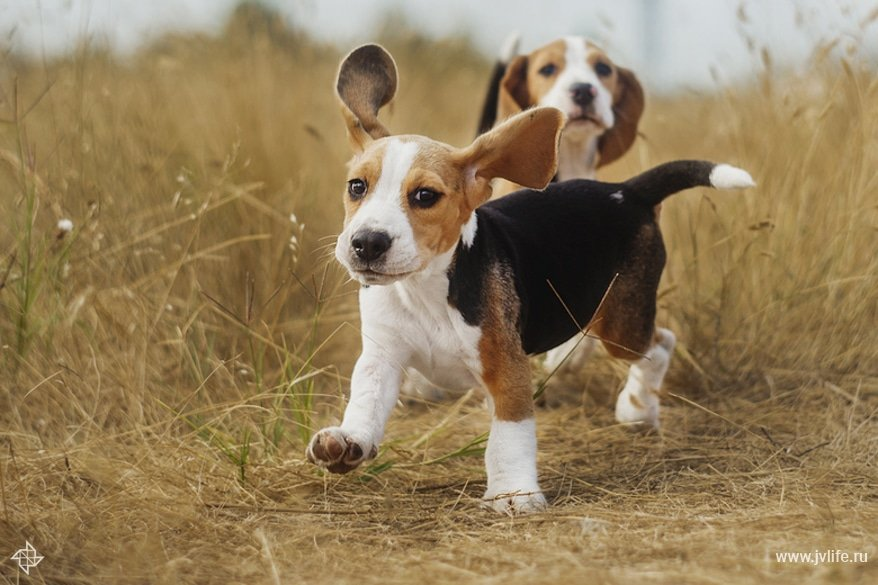

История породы
Существуют разные версии происхождения породы. Одна из них говорит о том, что к созданию этого вида гончих были причастны римляне, которые завезли их в свою северную английскую провинцию. Английская версия утверждает, что таких собак успешно разводили бритты задолго до того, как стать вассалами Римской империи. Согласно этой версии, бигли были верными спутниками рыцарей Круглого Стола. При этом все версии сходятся в том, что современный облик бигля определился именно в Англии.
Компактные собаки подходили для охоты в лесистой местности на мелкого зверя, которые часто спасались от погони в плотных зарослях кустарника. Пробраться через такие заросли более крупным гончим было проблематично, потому что они «застревали». С этой задачей отлично справлялись мелкие специализированные породы собак крепкого телосложения с «беговыми» лапами нормальной длины и мощными челюстями для удержания добычи.
Две линии породы, предназначением которых была охота на мелкого зверя, определились к середине XVIII века в Англии. К ним относились южная гончая порода и северный бигль. В середине XIX века Парсон Ханивуд создал базу современной породы, которую он представил в Эксексе — графстве на юго-востоке Англии. Потомки этой породы встречаются в современных питомниках по сей день.
Рекламу этой охотничьей собаке сделал известный английский натуралист Чарльз Дарвин, который в 1831 году отправился в кругосветное плавание на небольшом научном судне «Бигль». Итогом пятилетней экспедиции ученого стала его книга «Происхождение видов путем естественного отбора». Название породы в том путешествии было увековечено дважды. Второй раз — на географической карте в виде открытого пролива Бигля, соединяющего Атлантический и Тихий океаны в архипелаге у южной оконечности Южной Америки.
В конце XIX века американцы привезли биглей из Северной Англии. Первые испытания в поле проводили в национальном клубе биглей.